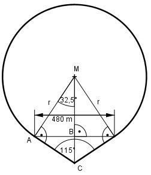

Aufgabe 103 Zwei Bahnstrecken schließen einen Winkel von 115° ein. Sie sollen tangential durch einen Kreisbogen verbunden werden. Die Berührpunkte liegen 480 m auseinander. Welchen Radius r hat der Bogen?

Im Dreieck ABM: Der Winkel bei M = 90° - 115/2° = 90° - 57,5° = = 32,5° 480/2 m sin 32,5° = ---------- |*r r r * sin 32,5° = 240 m |:sin 32,5° 240 m 240 m r = ----------- = --------- = 446,7 m sin 32,5° 0,5373